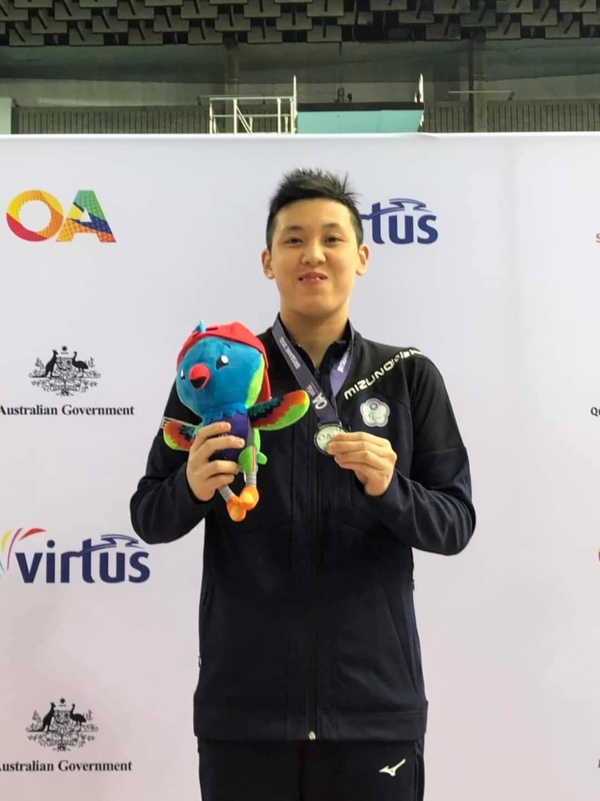
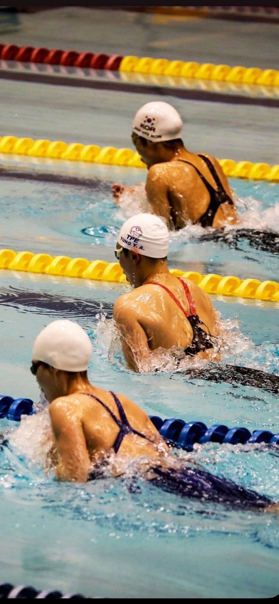

01我的故事
董宜安 — 勇敢追夢的游泳選手
董宜安（安安）今年 26 歲，自兩歲起便接受早療課程。她是一位發展遲緩、具有自閉症特質並伴隨智能障礙的孩子。然而，時光流轉，她依舊保有那份天真無邪的笑容，以及勇敢追夢的心。一路走來，感恩無數貴人的陪伴與支持，讓她能一步步邁向今天的舞台。
自小，水就像磁鐵般吸引著她。小學一年級暑假，媽媽帶她去文山特教接觸游泳。起初，敏感又適應力不足的安安，只以尖叫回應，學習毫無進展。直到小學三年級，教練以遊戲的方式引導，並從仰式開始，才讓安安漸漸愛上水中的自在感。從那一刻起，游泳不再只是玩樂，更成為她熱愛的挑戰與賽事。
雖然理解力有限，人際互動比一般人面臨更多困難，但安安沒有退縮，反而選擇了最艱難的競技運動之路。問她為什麼喜歡比賽，她笑著回答：「因為比賽就像收集聖誕樹上的星星 ⭐️，像瑪利歐收集金幣一樣，收集到的星星可以讓我換角色，繼續挑戰下一關。」 這就是安安：不斷超越過去的自己，蛻變為全新的角色，持續迎向下一個挑戰。
在水中，她找到了自己的節奏；在賽場上，她展現了自信與光芒。安安不僅持續參加國內賽事、屢屢刷新全國紀錄，更勇敢走向國際舞台，為國爭光。對她而言，每一步都比常人更辛苦；也正因如此，每一步都更值得驕傲。
她的故事，早已超越了獎牌本身，成為許多人心中的力量與榜樣。

